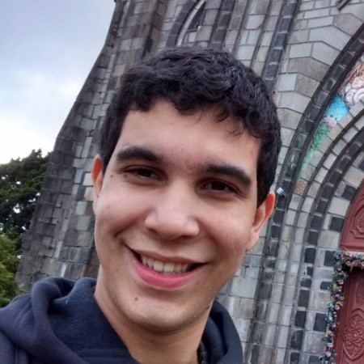

Nome: Luís Filipe Pereira Perrú
Email: lfpperru@hotmail.com
Principais skills:
Modelos físicos e matemáticos
Ciência de Dados e Inteligencia Artificial
Histórico profissional:
-
2016 - 2017:
Bolsista em projeto de Iniciação Cientifica.
-
2017 - 2018:
Bolsista do Programa Altos Estudos pelo MCCT em Volta Redonda.
-
2018:
Integrante do minicurso "Introdução ao LaTex".
-
2018 - 2019:
Experiência em aula particular de Matemática
para ensino fundamental e médio no espaço Acess.
-
2019 - 2020:
Experiência em edição de áudio e video para
um canal do Youtube com mais de 50k inscritos.
Formação:
-
2012 - 2016
Universidade Federal Fluminense, Bacharel em
Matemática com enfâse em Matemática Aplicada e Computacional, Santo Antônio de
Pádua.
-
2016 - 2018:
Bolsista do Programa Altos Estudos pelo MCCT em Volta Redonda.
-
2021:
Residência Serratec como Desenvolvedor de Software Full-Stack em Teresópolis.
Competências:
- Proatividade e liderança
- Perfil de tomada de decisão utilizando modelos diversos
- Familiaridade com diversas áreas das ciências exatas
- Mindset focado em construir soluções e funcionalidades
criativas
- Capacidade de aprender com a experiencias de outros e
compartilhar
minhas próprias
- Apaixonado por tecnologia e e-sports
- Comprometimento em um ambiente voltado a entregas de
alta
colaboração